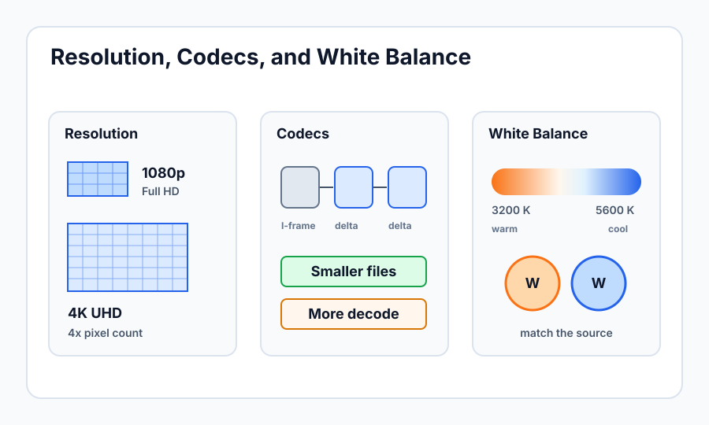

Resolution, Codecs, and White Balance
Learning Objectives
- Understand common video resolutions and why you might choose each.
- Explain what a codec is and how compression affects quality and file size.
- Describe the difference between 8-bit and 10-bit color and when bit depth matters.
- Understand what white balance means and why it changes the look of your footage.
- Set a correct white balance using a preset, auto, or custom method.
Resolution
Resolution describes how many pixels make up each frame of video — how much detail is captured. More pixels means a sharper, more detailed image that can be displayed on larger screens without looking soft. But resolution also directly affects file size, storage requirements, and the computing power needed to edit and deliver the footage.
Common Resolutions
1080p (Full HD) — 1920 × 1080 pixels — is still the dominant delivery format for web video, streaming platforms, and most organizational use cases. It looks excellent on virtually any screen up to about 50 inches at normal viewing distances, and the files are manageable in size. If your organization distributes primarily to YouTube, a website, or a small conference room screen, 1080p is entirely appropriate and often preferable for its efficiency.
4K (UHD) — 3840 × 2160 pixels — captures four times the pixel count of 1080p. This matters when your delivery screen is very large, when you anticipate the content being viewed on high-resolution displays, or when you want flexibility to reframe shots in post-production. Shooting in 4K and delivering in 1080p allows you to punch in or reposition your shot by up to 200% without losing resolution — a significant editorial advantage that is increasingly common in interview and event work. The tradeoff is that 4K files are substantially larger and require faster storage and a more powerful editing computer.
6K and higher — available on cinema cameras — is primarily used when extreme reframing flexibility or very large-format delivery is needed. For most institutional video production, 6K is unnecessary overhead.

Shooting 4K to deliver 1080p is a practical strategy even when you plan to use every shot exactly as framed. The slight oversampling (more sensor data averaged into each pixel) produces a 1080p image that is subtly sharper and cleaner than a camera natively recording 1080p. Many organizations adopt this as a standard workflow.
Codecs
A codec (a blend of "compress" and "decompress") is the algorithm that encodes your video into a file format and decodes it during playback. The camera captures an enormous amount of raw sensor data with every frame — far too much to store practically — so the codec compresses it by identifying and discarding data it predicts the human eye will not miss. Different codecs make different tradeoffs between quality, file size, and editing performance.
Common Codecs
H.264 is the most widely supported codec in the world. It produces small, efficient files that play on almost any device without conversion. The compression is "inter-frame" — the codec stores only the changes between frames rather than full frames repeatedly — which means files are small but can be demanding to edit because the editing software must decode many frames to reconstruct a single one. H.264 is excellent for delivery and acceptable for acquisition on less demanding projects.
H.265 (HEVC) is more efficient than H.264 — the same quality at roughly half the file size — but requires more computing power to decode. It is becoming the standard for 4K acquisition and delivery, but hardware support is not yet universal across older editing machines.
XAVC and XAVC S are Sony's proprietary codecs used across their professional and consumer cameras. XAVC S is an inter-frame codec similar in structure to H.264 but with higher bit rates for better quality. XAVC-I (Intra) records full frames independently, which is easier to edit but creates larger files.
ProRes is Apple's professional codec, widely used in post-production for its editing performance and quality retention through multiple render passes. ProRes files are large — far larger than H.264 at equivalent quality — but edit smoothly on most modern computers. Some cameras can record ProRes internally; otherwise, it requires an external recorder connected via HDMI or SDI.
| Codec | File Size | Edit Performance | Best For |
|---|---|---|---|
| H.264 | Small | Moderate | Delivery, run-and-gun acquisition |
| H.265 | Smaller | Demanding | 4K acquisition, efficient delivery |
| XAVC S | Medium | Good | Sony camera acquisition |
| ProRes | Large | Excellent | Post-production, color grading |
Bit Depth: 8-bit vs. 10-bit
Bit depth describes how many possible values exist for each color channel in every pixel. An 8-bit image has 256 possible values per channel (red, green, blue) — about 16.7 million possible colors total. A 10-bit image has 1024 possible values per channel — about 1.07 billion possible colors. In practice, the difference is subtle when viewing the footage straight out of camera, but it becomes significant when color grading.
When you push the exposure, contrast, or color of 8-bit footage in grading, you can expose "banding" — visible stepping between shades of color where a smooth gradient should be. This is particularly obvious in skies, skin tones, and subtle shadows. Ten-bit footage has enough color data that aggressive grading still produces smooth results. If your workflow includes significant color correction, 10-bit recording is worth the larger file sizes it typically produces.
Bit depth matters most when combined with a log picture profile (covered in Lesson 5). Log footage is intentionally flat and low-contrast — it requires significant color grading, which means you need 10-bit data to do it without visible degradation. Shooting log in 8-bit is generally not recommended.
White Balance
Light sources produce different colors of light, and your camera needs to know what "white" looks like in the current lighting conditions so it can render all other colors correctly. This is called white balance. If white balance is set incorrectly, your footage will have a color cast: too orange in tungsten light that is told it is daylight, or too blue in daylight that is told it is tungsten.
Color Temperature
Color temperature is measured in Kelvin (K). Lower Kelvin values are warmer (more orange/yellow); higher Kelvin values are cooler (more blue). The common references are:
| Light Source | Approximate Kelvin |
|---|---|
| Candles, fire | 1800–2000 K |
| Tungsten / incandescent bulbs | 2800–3200 K |
| Warm white LED / halogen | 3200–4000 K |
| Fluorescent (cool white) | 4000–4500 K |
| Daylight (overcast sky) | 5500–6000 K |
| Midday sun | 5600 K |
| Clear blue sky (shade) | 7000–8000 K |
Setting White Balance
Auto White Balance (AWB) lets the camera analyze the scene and continuously estimate the correct white balance. This is convenient for run-and-gun shooting where you do not have time to set it manually, but it is problematic for any shot where consistency matters — AWB can shift noticeably between cuts if the scene changes, creating color jumps in the edit that look unprofessional.
Presets (daylight, tungsten, fluorescent, shade) are fixed Kelvin values assigned to named lighting conditions. They are more consistent than AWB and fast to set. If you know you are shooting in standard office fluorescent lighting, the fluorescent preset gets you close with a single button press.
Manual Kelvin — setting a specific K value — gives you precise and repeatable control. If you shoot an interview at 5200K today and need to match it with B-roll shot tomorrow, you set the same value and the color will match, regardless of subtle changes in the environment. This is the preferred method for consistent multi-shoot projects.
Custom White Balance (gray card method) is the most accurate approach in unusual or mixed lighting. Hold a neutral gray card (or a clean white sheet of paper) in front of the lens so it fills the frame, then use the camera's custom white balance function to measure that sample. The camera calculates the exact Kelvin needed to make that surface neutral and stores it. This method catches unusual fluorescent casts, LED color shifts, or mixed sources that a preset would miss.
Mixed color temperatures in a single frame — for example, a subject lit by tungsten lamps in a room with a daylight window behind them — cannot be fully corrected in post. The background will look blue if you white balance for the tungsten subject, or the subject will look orange if you balance for the daylight background. The solution is to gel the windows with CTO (Color Temperature Orange) to match the tungsten, or replace the tungsten lights with daylight-balanced LEDs. Matching color temperature on set is far easier than fixing mixed color in post.
You are shooting an interview indoors under tungsten lights (approximately 3200K), but the camera's auto white balance is set to 5600K (daylight). What color cast will the footage have?
Why does 10-bit color matter more when you plan to color grade your footage significantly?
Key Takeaways
- Resolution determines how many pixels are in each frame. 1080p is efficient and widely supported; 4K provides reframing flexibility and future-proofing for large screen delivery.
- Codecs compress video data for storage. H.264 is compact and universal; ProRes is large and edit-friendly. Match your codec choice to your workflow requirements.
- 10-bit color is significantly better than 8-bit for footage that will be color graded — more color data means smoother results when pushing exposure or saturation.
- White balance tells the camera what color "white" is in the current lighting. Incorrect white balance creates an orange, blue, or green color cast across the entire image.
- Set white balance manually using a Kelvin value or custom gray card measurement for consistency across shots and days. Avoid Auto White Balance when consistency matters.